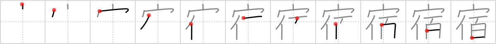

宿
← →
inn

Reading:
On-Yomi: シュク — Kun-Yomi: やど、やど.る、やど.す
Heisig story:
House . . . person . . . hundred.
Koohii stories:
1) [laner36] 6-9-2007(201): The Toyoko Inn can house 100 people or 1 Mr. T.
2) [fuaburisu] 9-3-2010(51): The inn is like a big house that can addomodate a hundred persons. Only this time, there's just Mister T and he's booked all the rooms!
3) [TunS77] 28-7-2009(28): A hundred people under one roof, its gota be a inn!
4) [uberclimber] 14-3-2011(12): The inn is large enough to house 100 jedi: lightsabres, droids and all. 宿題 (しゅくだい) : homework; 下宿 (げしゅく) : lodge; 宿 (やど) : inn, lodging.
5) [mantixen] 2-9-2008(9): Haruhi reserved all one hundred rooms under the roof of the inn.